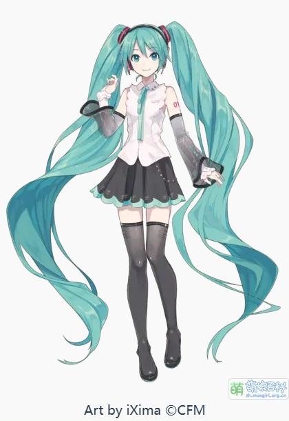

| 主页 |
| 什么是Vocaloid？ |
| 我去，初音未来！ |
| 部分P主推荐 |
| 不只是二次元，也是Jpop！ |
| 作者的话 |
初音未来（日语：初音（はつね） ミク，平文式罗马字：Hatsune Miku）是Crypton Future Media株式会社企划、开发、贩售的，使用YAMAHA的VOCALOID引擎和Crypton自主研发的NT歌声合成引擎的声音库软件及其拟人化形象。 初音未来与镜音铃·连、巡音流歌、MEIKO、KAITO共称为“Piapro角色”，或“初音未来和她的伙伴们”。初音未来也是Crypton“角色主唱系列”（Character Vocal Series）的第一作，代号为CV01。 初音未来的日文与英文简称分别为“ミク”与“Miku”（两者读音基本相同），而中文社区则经常简称为“初音”。 2014年末至今，上海新创华文化发展有限公司是初音未来等Crypton旗下虚拟歌姬角色形象、IP在中国大陆地区的版权总代理命名及其由来
早在2007年6月30日或之前，初音未来的形象就已经公开，但是当时并没有姓氏，而是称呼为“ミク”。2007年7月12日，公开了姓氏“初音”和名字“ミク”的汉字写法“未来”（“み”为“未”字的音读，“く”为“来”字的训读）。 “初音”有“初次的声音”（日语：初めての音）的意思，而这里的“声音”指的是歌声。同时，“初音”也象征着“出发点”，而“未来”象征着VOCALOID所代表的未来的音乐的可能性。“初音未来”也可以理解为“从未来传来的最初之声”。
音源
初音未来（V2）的音源样本由声优藤田咲提供。这一选择是在考虑过近五百份声音样本后作出的，因为藤田咲的声音“清楚而可爱”。在录音时，藤田咲以“可爱的偶像声线”进行录音，共花费两天时间，每天三小时，录音内容是无意义的罗马字组合（声库录音表）。音源制作的演示乐曲让藤田咲十分惊喜，认为十分可爱。实际上，音源合成输出的声音与藤田咲本人的声音并不相似。（真·魔改 虽然藤田咲本人还是能勉强模仿出来的） 后续版本初音未来音库仍由她提供，并于部分影视作品中为作为客串角色的初音未来配音。
音库软件版本及形象设定
随着技术的发展，音库软件也在不断更新，初音未来的形象设定也在发生改变。音库软件有初音未来Append（V2）、V3、V3 English、V4X、V4 English、V4 中文版、NT等版本，形象设定也随着软件而改变（不过双马尾，公式服等核心特点一直如初）
反响
2007年8月20日，初音未来的试听曲发布后大受好评，让初音未来的预定十分火爆，甚至超出了制作人员的预想。随后初音未来迅速走红，作为音库软件占据了超过30%的市场份额，作为音库软件，使大量个人音乐制作者能够简单且经济的制作歌曲，也激发了大量音乐人的创作热情。同时，miku作为虚拟形象也收获了极大的人气，成为了跨越音乐，ACGN，乃至文旅，地方形象大使等多领域的知名IP
